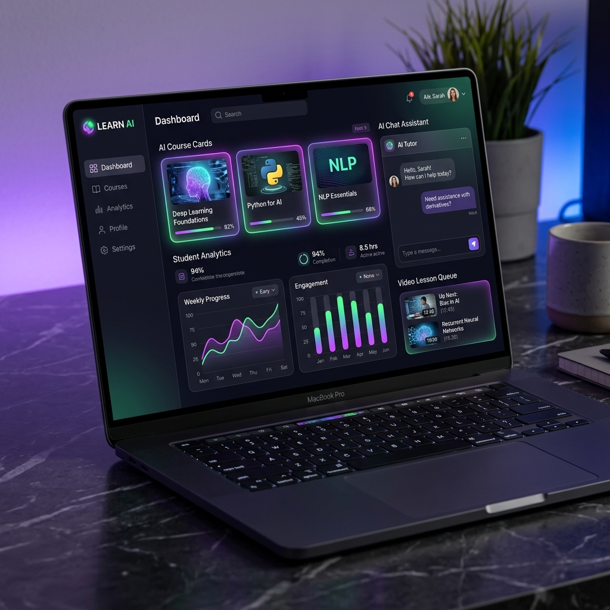
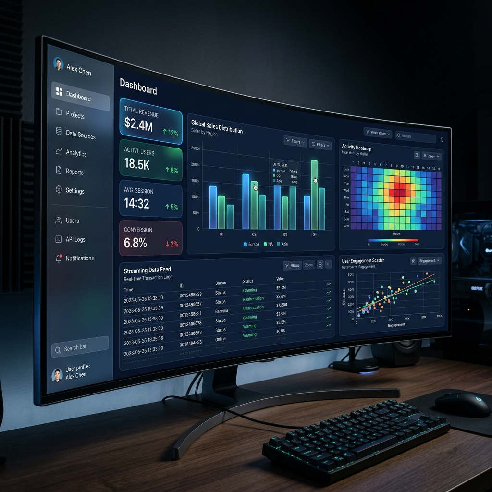

Map
Gỡ bài toán thành input, rule và output rõ ràng.
Nguyen Tuan Anh / AI Architect
Người sử dụng sáng tạo AI, biến những công cụ mạnh mẽ nhất thành quy trình tự động hóa hiệu quả.
Operating flow
Gỡ bài toán thành input, rule và output rõ ràng.
Dựng prototype nhanh, kiểm chứng bằng dữ liệu thật.
Nối API, agent và dashboard thành quy trình liền mạch.
Theo dõi hiệu quả, tối ưu chi phí và mở rộng đúng lúc.
Selected projects

EdTech integration that turns teaching content into guided AI-supported learning flows.
Research, extraction and workflow automation shaped for faster operating decisions.

Signal-focused dashboard work for campaign learning, pattern finding and next actions.
Impact
years experience
projects delivered
partners
Experience
ASK TROKID
ADELA
Brand quần áo TMĐT
Nhà hàng hải sản
Education
Điện tử Viễn thông
Công nghệ thông tin
Skills
About
Tôi kết nối AI, dữ liệu, nội dung và quy trình vận hành để tạo ra hệ thống rõ ràng, có thể đo lường và mở rộng. Cách làm của tôi là bắt đầu từ bài toán thật, dựng thử nhanh, rồi biến phần hiệu quả thành hệ thống chạy ổn định.
Nhìn toàn cảnh input, rule, agent và output trước khi xây.
Biến công cụ AI thành quy trình thực tế cho học tập và vận hành.
Kết hợp nội dung, dữ liệu và tự động hóa để ra quyết định nhanh hơn.